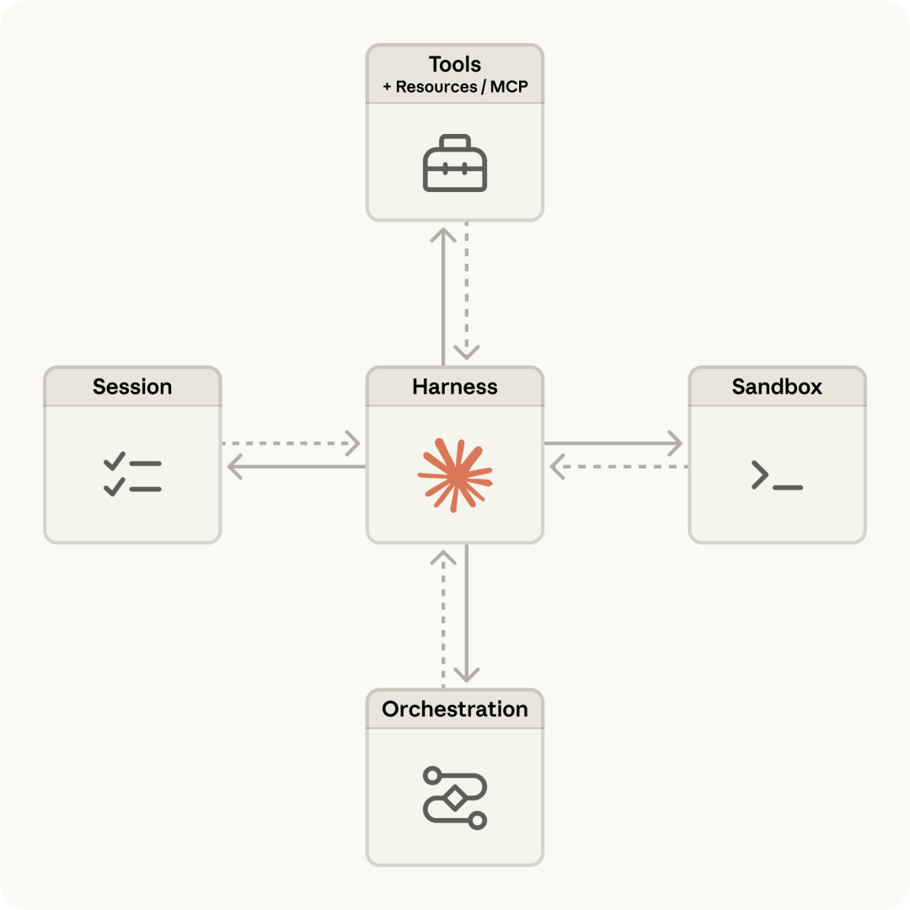
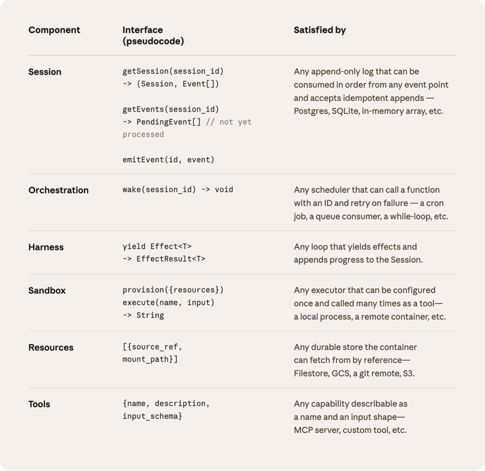
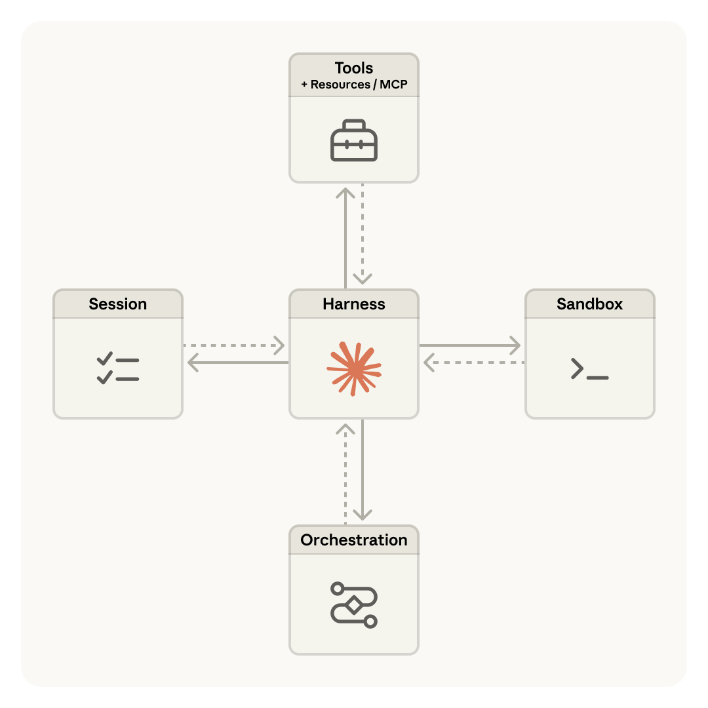
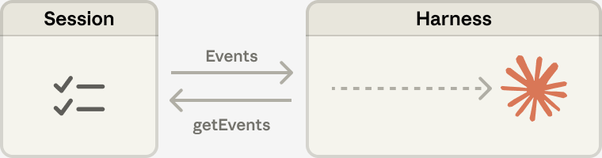
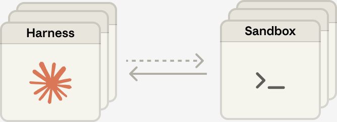

Claude Managed Agents 发布：Harness 三层解耦架构，把 Agent 从宠物变成牲畜
来源：微信公众号 归档日期：2026-04-09 抓取状态：成功 原文字符：4939｜配图：5 张
摘要速览
企业想基于 Claude 做生产级 Agent，得自己搭沙箱、做状态管理、处理权限、写错误恢复——这些基础设施工作比业务逻辑本身还重，开发周期动辄数月。
核心内容
- 产品定位转变：Anthropic 从"模型提供商"变成"Agent 基础设施提供商"。之前卖 token，现在卖运行 Agent 的全套环境（容器 + Session + Harness + 权限管理），$0.08/session-hour 的定价意味着在 token 之外多了一条收入线
- 三层虚拟化架构（Session / Harness / Sandbox）：
- Session（会话）：追加写入的事件日志，活在上下文窗口之外，持久存储。通过
getEvents()按需取回切片，解决长任务超出上下文窗口的问题 - Harness（编排循环）：调用 Claude、把工具请求路由到对应基础设施的循环。无状态，崩溃后用
wake(sessionId)从日志恢复 - Sandbox（执行环境）：Claude 跑代码的容器。通过
execute(name, input) → string调用，挂了换一个就行 - 三者完全解耦，任何一个故障不影响其他两个
- 从宠物到牲畜：耦合设计下容器是"宠物"（挂了得救），解耦后变成"牲畜"（挂了换一头）。Harness 也是牲畜——Session 日志在外部，Harness 崩溃不丢状态。这个隐喻来自 DevOps 的经典理念
- 安全边界结构化：耦合设计里 Claude 生成的不可信代码和凭证在同一容器，一次提示注入就能拿到 token。解耦后凭证永远不在沙箱里——Git token 在初始化时写入本地 remote，OAuth token 存安全保管库通过代理调用
- 多大脑多双手：解耦后推理可以在容器启动前就开始（p50 TTFT 下降约 60%，p95 下降超 90%）。每双手就是
execute(name, input) → string，Harness 不关心沙箱是容器、手机还是模拟器。大脑之间可以互传双手
- meta-harness 设计哲学：不对具体 Harness 实现做假设，只对 Claude 需要的接口形状做假设。借鉴操作系统思路——
read()不管底下是 70 年代磁盘还是现代 SSD。接口比实现活得久
可执行启发
（待补充）
我的想法
（待补充）
思考方向：
- 这个三层解耦对我们自己搭建的 Agent 体系（Chairman + Ops Skills）有什么可借鉴的？比如 Session 外置日志的思路能不能用在 OpenCode 的跨会话记忆上？
- Anthropic 从模型厂到基础设施厂的定位转移，对 AI 创业者意味着什么？自建 Harness 的空间是否在被压缩？
为什么有用
- 这是 Harness Engineering 从概念走向产品化的关键一步。之前 Anthropic 发了两篇工程博客讲 Harness 理念，现在直接把它做成了开箱即用的云服务
- 三层解耦的架构设计（Session/Harness/Sandbox）是做任何 Agent 系统都可以参考的模式——即使不用 Anthropic 的服务，这个分离思路也适用于自建系统
- "Harness 编码的是模型做不到什么的假设，这些假设会过时"这句话是 Harness Engineering 的核心认知：架构不是一劳永逸的，要随模型进化定期审计简化
适用 / 不适用场景
- 适用：需要理解 Agent 基础设施发展方向、设计多 Agent 系统架构、评估 Anthropic 生态的场景
- 不适用：只需要简单 API 调用的轻量场景，不涉及长时间运行或多工具协调
原文一：金色传说大聪明
今天，Anthropic 发布了 Claude Managed Agents
这是一套可组合的 API，用于构建和部署云托管的 AI Agent。但跟市面上的 Agent 框架不同，Anthropic 卖的核心是 Harness（Agent 编排引擎） ：一个经过调优的编排循环，自动处理工具调用决策、上下文管理、错误恢复，并且随模型能力升级自动演进
之前 Anthropic 的产品线有一个明显的断层。面向消费者有 claude.ai 和 Claude Code，面向开发者有 Messages API。但如果一家企业想基于 Claude 做一个长时间运行的、能自主调用工具的 Agent，它需要自己搭沙箱、做状态管理、处理权限、写错误恢复逻辑。这些基础设施工作可能比 Agent 本身的业务逻辑还重
Managed Agents 填的就是这个空。你定义 Agent 的任务、工具和约束，Anthropic 负责跑
它能做什么
生产级沙箱：每个 Agent 跑在一个安全的云容器里，可以预装 Python、Node.js、Go 等环境，配置网络访问规则，挂载文件。Agent 在容器里执行代码、编辑文件、跑命令，都在隔离环境中
长时间运行的 Session：Agent 可以自主运行几个小时，断连了会恢复，进度和产出持久化。这解决了「Agent 跑到一半挂了怎么办」的问题
内置编排 Harness：Anthropic 提供了一个经过调优的 Agent Harness，自动处理工具调用决策、上下文管理和错误恢复。内置 prompt caching、compaction 等性能优化
多 Agent 协调：研究预览阶段。一个 Agent 可以启动其他 Agent，分配子任务并行处理
自评估能力：研究预览阶段。你定义成功标准，Claude 自己迭代直到达标。在内部测试中，结构化文件生成任务的成功率比标准 prompting 方式提高了最多 10 个百分点 ，提升在难题上最明显
治理工具：Scoped permissions（作用域权限）、身份管理、执行追踪。Session tracing 和集成分析直接内置在 Claude Console 里，可以检查每一个工具调用、决策点和失败模式
定义 Agent 可以用自然语言描述，也可以用 YAML 文件。支持 MCP 服务器和 Agent Skills
Harness 怎么做的：把大脑和手分开
这是这次发布中技术含量最高的部分。Anthropic 同时发了一篇工程博客，标题是「Scaling Managed Agents: Decoupling the brain from the hands」，详细讲了 Harness 的架构设计
Harness 编码的是模型做不到什么的假设，这些假设会过时
一个具体例子：Sonnet 4.5 在接近上下文限制时会提前收工（他们叫「context anxiety」），Anthropic 在 Harness 里加了上下文重置来应对。但换到 Opus 4.5 之后，这个行为消失了，重置变成了多余的负担
所以 Managed Agents 的设计目标是： 为「尚未想到的程序」设计系统 。这个思路借鉴了操作系统的做法。操作系统通过虚拟化硬件（进程、文件）来支持还不存在的程序。抽象比硬件活得久
三层虚拟化
Managed Agents 把 Agent 的组成部分虚拟化成三个接口：
Session（会话） ：所有事件的追加写入日志，持久存储在 Harness 之外
Harness（编排循环） ：调用 Claude、把 Claude 的工具调用路由到对应基础设施的循环
Sandbox（执行环境） ：Claude 可以在里面跑代码和编辑文件的容器
三者解耦，互不依赖。任何一个出故障或需要替换，都不影响其他两个
从宠物到牲畜
最初的设计把所有组件放在一个容器里。好处是文件操作是直接系统调用，没有服务边界。但坏处是：容器变成了一只「宠物」。宠物坏了你得救它，牲畜坏了换一头就行
解耦之后，容器变成了牲畜。Harness 通过 execute(name, input) → string 调用容器，就像调用其他工具一样。容器挂了，Harness 捕获错误传给 Claude，Claude 决定是否重试，重试就起一个新容器
Harness 也变成了牲畜。Session 日志在 Harness 之外，Harness 崩溃了什么都不丢。新的 Harness 通过 wake(sessionId) 启动，从上次停下的地方继续
安全边界也因此变干净了。耦合设计里，Claude 生成的不可信代码跟凭证在同一个容器里。解耦后，凭证永远不在沙箱里。Git 令牌在初始化时写入本地 remote，Agent 不经手。OAuth 令牌存在安全保管库里，通过代理调用
Session 不是上下文窗口
长任务经常超出 Claude 的上下文窗口。压缩、裁剪、总结都是不可逆操作，可能丢掉后面用得上的信息
Managed Agents 的做法是：Session 作为一个独立的、持久化的上下文对象存在于上下文窗口之外。Harness 通过 getEvents() 按需取回事件流的切片，可以回到特定时刻之前重读上下文
多个大脑，多双手
解耦带来了扩展能力。之前 Harness 在容器里，每个 Agent 会话都要等容器起好才能开始推理。解耦后，推理可以在容器起好之前就开始。 p50 TTFT 下降了约 60%，p95 下降了超过 90%
每双手就是一个工具调用： execute(name, input) → string 。Harness 不知道沙箱是容器、手机还是 Pokémon 模拟器。因为手不绑定大脑，大脑之间可以互相传递手
Anthropic 工程博客把这个架构叫「meta-harness」：不对具体的 Harness 实现做假设，只对 Claude 需要的接口形状做假设
谁在用
Notion 正在私测阶段将 Claude 集成到工作区，让团队成员可以直接在 Notion Custom Agents 中把任务委托给 Claude
Rakuten 在产品、销售、营销、财务、HR 部门都部署了 Agent，接入 Slack 和 Teams。每个专项 Agent 一周内部署完成
Asana 做了 AI Teammates，在项目管理流程中跟人类协作。团队表示用 Managed Agents「显著加速了高级功能的开发」
Sentry 把 Seer 调试 Agent 跟 Claude Agent 配对，后者负责写补丁和开 PR。集成在几周内完成，而非原来预估的几个月
Atlassian 把 Agent 直接构建到 Jira 工作流里，用户可以在 Jira 中直接分配任务给 Agent
定价
标准的 Claude Platform token 费率，加上每个 Session 的活跃运行时间 $0.08/小时 （按毫秒计量）。Agent 等待用户输入或等待工具返回的空闲时间不计费。Agent 做 web 搜索额外收 $10/千次搜索
几个信号
第一，Anthropic 的产品形态在这一步发生了质变。之前它卖的是模型（API token），现在它卖的是运行 Agent 的基础设施（容器、Session、Harness、权限管理）。从「模型提供商」到「Agent 基础设施提供商」，这是一个根本性的定位转移
第二，Harness 的 meta-harness 设计思路值得注意。Anthropic 没有把某一个具体的 Harness 实现写死，而是虚拟化了 Harness 的接口。这跟操作系统的设计哲学一致：接口比实现活得久
第三，时间线。4 月 4 日封杀 OpenClaw 订阅通道，4 月 7 日发布 Mythos，4 月 8 日发布 Managed Agents。三天三个动作：收紧第三方 Agent 的薅羊毛通道，展示最强模型能力，推出自己的 Agent 基础设施平台。商业闭环形成
$0.08/session-hour 意味着 Anthropic 开始在 token 之外赚钱了
Token 收入跟模型使用量挂钩，session-hour 收入跟 Agent 运行时长挂钩。后者是一个更稳定、更可预测的收入流
原文二：你说的完全正确（AI寒武纪）
Anthropic 推出平台级产品：Claude Managed Agents，开发周期从数月压缩到几天，To B 业务更进一步，这是直接给了一个 Harness Agent 的盒子，用户只管干活就行了，随着产品发布，A 厂还发布了一篇 Harness（Managed Agents）工程细节文章，再一次遥遥领先！
基础设施全托管，开发者只管业务逻辑
过去，构建一个可用于生产环境的智能体，开发者需要自己搭建沙箱代码执行环境、做断点续存、管理凭证、设置权限范围、实现端到端追踪。光这些基础设施工作就要耗掉数月时间，用户还没看到任何东西。
Managed Agents 把这些复杂性全部接管。开发者只需定义智能体的任务、工具和安全边界，Anthropic 负责在自己的基础设施上运行。内置的编排引擎会自动决定何时调用工具、如何管理上下文、如何从错误中恢复。
具体来说，Managed Agents 包含以下能力：
- 生产级智能体运行环境，安全沙箱、身份验证和工具执行全部由平台处理
- 长时任务会话，支持自主运行数小时，进度和输出在断线后依然持久保存
- 多智能体协调，允许智能体启动并调度其他智能体来并行处理复杂任务（研究预览阶段）
- 可信治理机制，智能体访问真实系统时具备权限范围控制、身份管理和执行追踪能力
专为 Claude 模型优化，任务成功率提升最高 10 个百分点
Managed Agents 在设计上与 Claude 模型深度配合。开发者可以只定义目标和成功标准，由 Claude 自我评估并持续迭代直到达成（研究预览阶段）。同时也支持传统的提示词加响应工作流，便于开发者保持更精细的控制。
Anthropic 内部测试显示，在结构化文件生成任务上，Managed Agents 相比标准提示循环，任务成功率最高提升 10 个百分点，在难度最高的任务上提升最为明显。
会话追踪、集成分析和问题排查指引已直接内置在 Claude Console 中，开发者可以检视每一次工具调用、决策过程和失败原因。
多家企业已在生产环境中使用
Notion 正在私测阶段将 Claude 集成到工作区，让团队成员可以直接在 Notion Custom Agents 中把任务委托给 Claude。工程师用它来写代码，知识工作者用它来生成网站和演示文稿，数十个任务可以并行运行，整个团队可以协作处理输出结果。
Rakuten 在产品、销售、市场、财务和 HR 等部门部署了企业级智能体，通过 Slack 和 Teams 接收员工指派的任务，返回电子表格、幻灯片和应用等可交付成果。每个专项智能体的部署周期在一周以内。
Asana 基于 Managed Agents 构建了 AI Teammates，让 AI 智能体在 Asana 项目中与人类并肩工作，承接任务、起草交付物。团队表示，使用 Managed Agents 后，高级功能的交付速度远快于原来的节奏。
Vibecode 将 Managed Agents 作为默认集成方案，帮助用户从一句提示词直接到部署上线的应用，用户启动同等基础设施的速度至少快了 10 倍。
Sentry 将旗下调试智能体 Seer 与 Claude 驱动的智能体配合使用，后者负责编写补丁并发起 Pull Request，让开发者从发现 bug 到得到可审查的修复方案一气呵成。整个集成在 Managed Agents 上只用了几周时间完成上线。
Harness 工程细节：把大脑和双手分开
Anthropic 同步发布了一篇工程博客，解释了 Managed Agents 背后的架构设计思路。
核心问题是：如何为还没有被想到的程序设计一个系统。几十年前，操作系统通过把硬件虚拟化为抽象层（进程、文件）解决了这个问题，这些抽象足够通用，能支撑那些当时根本不存在的程序。read() 命令不管底下是 1970 年代的磁盘还是现代 SSD，都能正常工作。
Managed Agents 遵循同样的模式，把 Agent 的组成要素虚拟化为三个部分：会话（session，记录所有发生过事件的只增日志）、控制器（harness，调用 Claude 并把工具请求路由到相关基础设施的循环）、沙箱（sandbox，Claude 运行代码和编辑文件的执行环境）。三个部分各自可以独立替换，互不干扰。
为什么不能把所有东西放在一个容器里
最初的设计是把所有 Agent 组件放在同一个容器里，会话、控制器、沙箱共享同一个环境。这样做有一定好处，比如文件编辑直接走系统调用，也没有服务边界要设计。但这种耦合带来了一个经典的基础设施问题：容器变成了一只宠物。
用宠物对牲口的比喻来说，宠物是有名字、需要精心照料、不能失去的个体，牲口则是可以互换的。在这个场景里，服务器就是那只宠物，容器一挂，会话就丢了；容器无响应，就得花时间去哄它恢复。
调试也成了难题。唯一的观察窗口是 WebSocket 事件流，但它没法告诉你故障发生在哪里。控制器的 bug、事件流的丢包、容器下线，表现出来全都一样。要排查根因，工程师得进到容器里开 shell，但那个容器里往往还有用户数据，这条路实际上走不通。
另一个问题是，控制器假设 Claude 操作的资源和它自己在同一个容器里。当客户要求把 Claude 接入自己的私有云时，要么得把他们的网络和 Anthropic 的网络打通，要么在他们自己的环境里跑 Anthropic 的控制器。一个埋在控制器里的假设，变成了连接不同基础设施时的障碍。
把大脑和双手拆开
解决方案是把大脑（Claude 和它的控制器）、双手（执行操作的沙箱和工具）、会话（事件日志）三者解耦，每个部分变成一个接口，对其他部分的假设尽可能少，各自可以独立出故障或替换。
控制器离开容器之后，调用沙箱的方式和调用其他任何工具一样：execute(name, input) → string。容器变成了牲口。容器挂了，控制器把失败当成工具调用错误处理，交回给 Claude。如果 Claude 决定重试，新的容器可以用标准配方重新初始化：provision({resources})。不再需要把挂掉的容器哄回来。
控制器本身也变成了牲口。因为会话日志在控制器外面，控制器崩溃后不需要保留任何状态。新的控制器用 wake(sessionId) 重启，用 getSession(id) 取回事件日志，从最后一个事件继续。控制器在运行过程中通过 emitEvent(id, event) 持续写入会话，保持事件的持久记录。
安全边界在耦合设计里，Claude 生成的不受信任代码和凭证跑在同一个容器里，一次提示注入攻击只需要说服 Claude 读取自己的环境变量，拿到 token 之后就能开出不受限制的新会话并分配任务出去。结构性修复是确保 token 永远无法从 Claude 生成代码运行的沙箱里访问到。具体通过两种方式实现：凭证可以和资源绑定，也可以放在沙箱外部的保险库里。以 Git 为例，在沙箱初始化时用仓库访问 token 克隆仓库，并接入本地 git remote，沙箱内部 git push 和 pull 正常工作，但 Agent 自始至终都不会碰到 token 本身。自定义工具方面，支持 MCP，OAuth token 存在安全保险库里，Claude 通过专用代理调用 MCP 工具，代理拿到关联会话的 token 后，自己去保险库取对应凭证再调用外部服务，控制器对任何凭证都不知情。
会话不是 Claude 的上下文窗口
长周期任务经常超出 Claude 上下文窗口的长度。常见的处理方式——压缩摘要、写入文件、裁剪旧内容，都涉及不可逆的决策，很难预判未来的轮次会用到哪些 token。
Managed Agents 里，会话日志充当了一个活在上下文窗口外部的上下文对象。接口 getEvents() 允许大脑通过选取事件流的位置切片来查询上下文，可以从上次停止的地方接着读，也可以倒回某个时间点之前几个事件，或者在执行某个操作之前重读相关上下文。取回的事件在传入 Claude 上下文窗口之前，还可以在控制器里做任意变换——包括上下文整理、提高提示缓存命中率等。
一个大脑接多双手，多个大脑也可以
大脑和双手解耦之后，客户的私有云问题自然消失了，控制器不再假设资源和自己在一起，接入任意位置的资源都可以。
性能上也有收获。原来把大脑放在容器里，意味着多少个大脑就要准备多少个容器，每个会话都要等容器启动完才能开始推理，即使这个会话根本不需要沙箱，也要先克隆仓库、启动进程、拉取待处理事件。解耦之后，容器只在大脑真正需要的时候才通过工具调用来启动，不需要沙箱的会话不用等。推理可以在编排层拉取会话日志里的待处理事件后立刻开始。按这套架构，p50 首 token 延迟下降了约 60%，p95 首 token 延迟下降超过 90%。
扩展到多个大脑，只需启动多个无状态控制器，按需连接双手。一个大脑接多双手的能力同样重要。实际上，这要求 Claude 同时感知多个执行环境并决定把任务发到哪里，认知负担比在单一 shell 里操作要重得多。早期模型能力不足，只能用单容器。随着模型智能提升，单容器反而成了瓶颈，那个容器挂了，大脑正在操作的所有双手的状态都会丢失。解耦之后，每只手都成为一个工具：execute(name, input) → string，一个名字和输入进去，返回一个字符串。这个接口支持任意自定义工具、任意 MCP 服务器以及 Anthropic 自己的工具。控制器不需要知道沙箱是一个容器、一部手机还是一个 Pokemon 模拟器。因为没有哪只手和哪个大脑耦合，大脑之间也可以互相传递双手。
定价与使用方式
Managed Agents 按使用量计费。Claude Platform 标准 token 费率照常收取，另外每活跃会话小时收费 0.08 美元。
目前 Managed Agents 已在 Claude Platform 正式上线。开发者可以通过阅读文档、进入 Claude Console 或使用新版 CLI 来部署第一个智能体。也可以使用最新版 Claude Code，内置了 claude-api 技能，直接向 Claude 说 start onboarding for managed agents in Claude API 即可开始上手。
- 文档地址：https://platform.claude.com/docs/en/managed-agents/overview
- 控制台入口：https://platform.claude.com/login
- source：https://claude.com/blog/claude-managed-agents
原文沉淀
目录
- 它能做什么
- 生产级沙箱
- 长时间运行的 Session
- 内置编排 Harness
- 多 Agent 协调
- 自评估能力
- 治理工具
- Harness 怎么做的：把大脑和手分开
- 三层虚拟化
- 从宠物到牲畜
- Session 不是上下文窗口
- 多个大脑，多双手
- 谁在用
- 定价
- 几个信号
API Product
今天，Anthropic 发布了 Claude Managed Agents
这是一套可组合的 API，用于构建和部署云托管的 AI Agent。但跟市面上的 Agent 框架不同，Anthropic 卖的核心是 Harness（Agent 编排引擎）：一个经过调优的编排循环，自动处理工具调用决策、上下文管理、错误恢复，并且随模型能力升级自动演进

Claude Managed Agents 架构，来自官方产品博客
之前 Anthropic 的产品线有一个明显的断层。面向消费者有 claude.ai 和 Claude Code，面向开发者有 Messages API。但如果一家企业想基于 Claude 做一个长时间运行的、能自主调用工具的 Agent，它需要自己搭沙箱、做状态管理、处理权限、写错误恢复逻辑。这些基础设施工作可能比 Agent 本身的业务逻辑还重
Managed Agents 填的就是这个空。你定义 Agent 的任务、工具和约束，Anthropic 负责跑
它能做什么
生产级沙箱
每个 Agent 跑在一个安全的云容器里，可以预装 Python、Node.js、Go 等环境，配置网络访问规则，挂载文件。Agent 在容器里执行代码、编辑文件、跑命令，都在隔离环境中
长时间运行的 Session
Agent 可以自主运行几个小时，断连了会恢复，进度和产出持久化。这解决了「Agent 跑到一半挂了怎么办」的问题
内置编排 Harness
Anthropic 提供了一个经过调优的 Agent Harness，自动处理工具调用决策、上下文管理和错误恢复。内置 prompt caching、compaction 等性能优化
多 Agent 协调
研究预览阶段。一个 Agent 可以启动其他 Agent，分配子任务并行处理
自评估能力
研究预览阶段。你定义成功标准，Claude 自己迭代直到达标。在内部测试中，结构化文件生成任务的成功率比标准 prompting 方式提高了最多 10 个百分点，提升在难题上最明显
治理工具
Scoped permissions（作用域权限）、身份管理、执行追踪。Session tracing 和集成分析直接内置在 Claude Console 里，可以检查每一个工具调用、决策点和失败模式
定义 Agent 可以用自然语言描述，也可以用 YAML 文件。支持 MCP 服务器和 Agent Skills
Harness 怎么做的：把大脑和手分开
这是这次发布中技术含量最高的部分。Anthropic 同时发了一篇工程博客，标题是「Scaling Managed Agents: Decoupling the brain from the hands」，详细讲了 Harness 的架构设计
Harness 编码的是模型做不到什么的假设，这些假设会过时
一个具体例子：Sonnet 4.5 在接近上下文限制时会提前收工（他们叫「context anxiety」），Anthropic 在 Harness 里加了上下文重置来应对。但换到 Opus 4.5 之后，这个行为消失了，重置变成了多余的负担
所以 Managed Agents 的设计目标是：为「尚未想到的程序」设计系统。这个思路借鉴了操作系统的做法。操作系统通过虚拟化硬件（进程、文件）来支持还不存在的程序。抽象比硬件活得久
三层虚拟化
Managed Agents 把 Agent 的组成部分虚拟化成三个接口：
Session（会话）：所有事件的追加写入日志，持久存储在 Harness 之外
Harness（编排循环）：调用 Claude、把 Claude 的工具调用路由到对应基础设施的循环
Sandbox（执行环境）：Claude 可以在里面跑代码和编辑文件的容器
三者解耦，互不依赖。任何一个出故障或需要替换，都不影响其他两个

大脑与双手解耦的架构
从宠物到牲畜
最初的设计把所有组件放在一个容器里。好处是文件操作是直接系统调用，没有服务边界。但坏处是：容器变成了一只「宠物」。宠物坏了你得救它，牲畜坏了换一头就行

耦合 vs 解耦：从宠物到牲畜
解耦之后，容器变成了牲畜。Harness 通过 execute(name, input) → string 调用容器，就像调用其他工具一样。容器挂了，Harness 捕获错误传给 Claude，Claude 决定是否重试，重试就起一个新容器
Harness 也变成了牲畜。Session 日志在 Harness 之外，Harness 崩溃了什么都不丢。新的 Harness 通过 wake(sessionId) 启动，从上次停下的地方继续
安全边界也因此变干净了。耦合设计里，Claude 生成的不可信代码跟凭证在同一个容器里。解耦后，凭证永远不在沙箱里。Git 令牌在初始化时写入本地 remote，Agent 不经手。OAuth 令牌存在安全保管库里，通过代理调用
Session 不是上下文窗口
长任务经常超出 Claude 的上下文窗口。压缩、裁剪、总结都是不可逆操作，可能丢掉后面用得上的信息

Session 与上下文窗口的关系
Managed Agents 的做法是：Session 作为一个独立的、持久化的上下文对象存在于上下文窗口之外。Harness 通过 getEvents() 按需取回事件流的切片，可以回到特定时刻之前重读上下文
多个大脑，多双手
解耦带来了扩展能力。之前 Harness 在容器里，每个 Agent 会话都要等容器起好才能开始推理。解耦后，推理可以在容器起好之前就开始。p50 TTFT 下降了约 60%，p95 下降了超过 90%

多大脑多双手
每双手就是一个工具调用：execute(name, input) → string。Harness 不知道沙箱是容器、手机还是 Pokémon 模拟器。因为手不绑定大脑，大脑之间可以互相传递手
Anthropic 工程博客把这个架构叫「meta-harness」：不对具体的 Harness 实现做假设，只对 Claude 需要的接口形状做假设
谁在用
我们希望 Notion 成为团队与 Agent 协作、把事情做完的最佳场所。Claude Managed Agents 能处理长时间运行的 Session、管理记忆、持续输出高质量结果
Eric Liu，Notion 产品经理
Rakuten 在产品、销售、营销、财务、HR 部门都部署了 Agent，接入 Slack 和 Teams。每个专项 Agent 一周内部署完成
Asana 做了 AI Teammates，在项目管理流程中跟人类协作。团队表示用 Managed Agents「显著加速了高级功能的开发」
Sentry 把 Seer 调试 Agent 跟 Claude Agent 配对，后者负责写补丁和开 PR。集成在几周内完成，而非原来预估的几个月
Atlassian 把 Agent 直接构建到 Jira 工作流里，用户可以在 Jira 中直接分配任务给 Agent
定价
标准的 Claude Platform token 费率，加上每个 Session 的活跃运行时间 $0.08/小时（按毫秒计量）。Agent 等待用户输入或等待工具返回的空闲时间不计费。Agent 做 web 搜索额外收 $10/千次搜索
几个信号
第一，Anthropic 的产品形态在这一步发生了质变。之前它卖的是模型（API token），现在它卖的是运行 Agent 的基础设施（容器、Session、Harness、权限管理）。从「模型提供商」到「Agent 基础设施提供商」，这是一个根本性的定位转移
第二，Harness 的 meta-harness 设计思路值得注意。Anthropic 没有把某一个具体的 Harness 实现写死，而是虚拟化了 Harness 的接口。这跟操作系统的设计哲学一致：接口比实现活得久
第三，时间线。4 月 4 日封杀 OpenClaw 订阅通道，4 月 7 日发布 Mythos，4 月 8 日发布 Managed Agents。三天三个动作：收紧第三方 Agent 的薅羊毛通道，展示最强模型能力，推出自己的 Agent 基础设施平台。商业闭环形成
$0.08/session-hour 意味着 Anthropic 开始在 token 之外赚钱了
Token 收入跟模型使用量挂钩，session-hour 收入跟 Agent 运行时长挂钩。后者是一个更稳定、更可预测的收入流
参考材料
Claude Managed Agents 产品公告 https://claude.com/blog/claude-managed-agents
Anthropic 工程博客：Scaling Managed Agents https://www.anthropic.com/engineering/managed-agents
Claude Managed Agents API 文档 https://platform.claude.com/docs/en/managed-agents/overview
归属：[[02-输入/按主题/AI与效率/_index|AI与效率]]